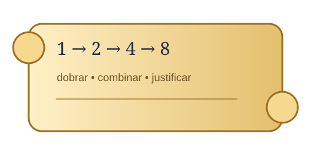

Tarefa 1
Egito Antigo • Dobramentos
A multiplicação egípcia dos grãos
Compor quantidades a partir de dobramentos sucessivos
A partir de uma situação envolvendo sacos e sementes, os estudantes podem investigar dobramentos, decompor quantidades e explicar as estratégias utilizadas, em um contexto associado a procedimentos matemáticos do Egito Antigo.